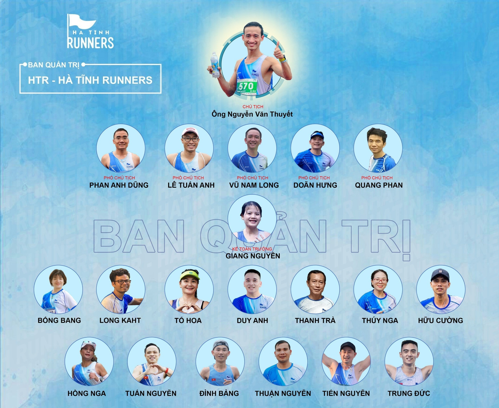

THÔNG CÁO KIỆN TOÀN BAN QUẢN TRỊ HÀ TĨNH RUNNERS - VÌ HTR VỮNG MẠNH VÀ PHÁT TRIỂN

Bước sang năm 2024, Hà Tĩnh Runners đã được gần 5 tuổi.
Với sự phát triển không ngừng của phong trà o rèn luyện chạy bộ, việc gia tăng nhanh chóng vá» số lượng thà nh viên, trải dà i trên nhiá»u vùng miá»n địa lý khác nhau.
Trước xu thế phát triển tất yếu đó của Hà Tĩnh Runners. Xuất phát từ tâm huyết , mong muốn cháy bá»ng tạo được một cộng đồng chạy bộ cho người Hà Tĩnh , lan tá»a và tạo những giá trị tốt đẹp đến cho xã hội. Trong vòng 2 ngà y 06 và 07/04/2024, đại diện các thà nh viên chủ chốt của các chi bộ HTR trên cả nước, đã tiến hà nh ngồi lại với nhau, hiệp thương và đã bầu chá»n ra các thà nh viên Ban quản trị cho nhiệm kỳ mới của Hà Tĩnh Runners, dựa trên danh sách ứng cá» và đỠcá» tại cuộc bình chá»n online ngà y 26.01.2024.
Xin được thông báo rộng rãi tới toà n thể các anh chị em trong Hà Tĩnh Runners:
Chủ tịch câu lạc bộ Hà Tĩnh Runners : Nguyễn Văn Thuyết
Các phó chủ tịch phụ trách câu lạc bộ :
- Lê Tuấn Anh
- Vũ Nam Long
- Phan Quang
- Phan Anh Dũng
- Nguyễn Doãn Hưng
Kế toán trưởng : Nguyễn Thị Trà Giang
Các thà nh viên trong các bộ pháºn chuyên môn của Hà Tĩnh Runners :
- Bùi Thị Hồng Nga
- Đặng Thị Tố Hoa
- Lê Thị Kim Tuyến
- Nguyễn Duy Anh
- Nguyễn Tiến Long
- Nguyễn Thanh TrÁ
- Nguyễn Thuáºn
- Nguyễn Văn Tiến
- Nguyễn Trung Đức
- Phan Đình Bảng
- Tô Thúy Nga
- Thái Hữu Cường
- Tuấn Nguyễn
Hy vá»ng được sự ủng hộ nhiệt tình tới từ toà n thể các thà nh viên Hà Tĩnh Runners , để BQT nhiệm kỳ mới có thể phát huy hết sức mình để đưa Hà Tĩnh Runners cà ng ngà y cà ng vững mạnh, có những bước phát triển mới vượt báºc hơn nữa.
#HTR #HaTinhRunners #BQT2024